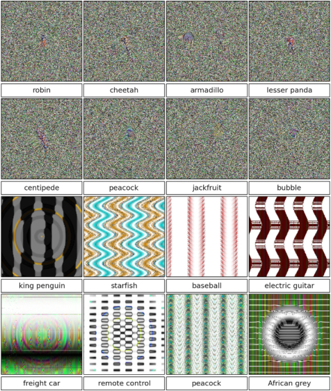
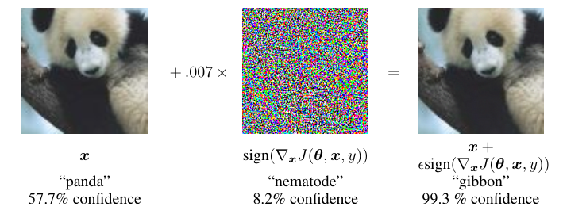
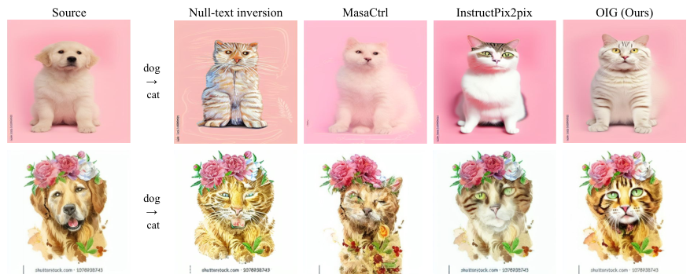
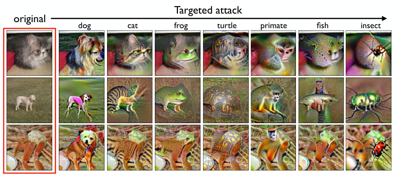

If Vision Classifiers Can Actually See, Gradient Attacks Should Look Like Conditional Diffusion
In 2015, an ImageNet classifier identified the image labeled “baseball” below with at least 99.6% confidence. The image contains three vertical rows of red stitching on a white background. There is no ball. The classifier assigned equally confident labels to the images above it, including a robin, a cheetah, and an armadillo. All three look like static.

These examples came from Nguyen, Yosinski, and Clune, who searched for images that a trained neural network would confidently assign to familiar categories. They used both evolutionary algorithms and gradient ascent. The figure above comes from the evolutionary experiments: candidate images that received higher scores for a target class were more likely to contribute to the next generation. What makes the baseball particularly interesting is that the classifier picked up on a real property of the object. Baseballs do have red stitching. The failure is how little else the model required before it was certain it saw one.
The object can disappear. The confidence can stay.
Goodfellow, Shlens, and Szegedy demonstrated the complementary failure. They started with a photograph that GoogLeNet correctly identified as a panda and changed the pixels by a small amount. The result still looks like the same panda, down to the black patch around its eye and the position of its paw. GoogLeNet classified it as a gibbon with 99.3% confidence.

A change to the input is called a perturbation. What makes this one a gradient attack is how the researchers chose it. During training, gradients tell us how to change a model’s weights to reduce its error. Here the weights are frozen, and the gradient is taken with respect to the image pixels. It indicates which small changes would increase the model’s error on this particular image. Goodfellow et al. used that information to push the classifier away from the correct answer. A targeted attack specifies the answer we want it to give instead.
Ordinary classification accuracy gives us little reason to anticipate either result. On natural photographs, a baseball’s stitching usually comes attached to a ball. A model that recognizes the whole object and a model that relies heavily on stitching can give the same correct answer across many such photographs. Nguyen et al. separate the stitching from the object. Goodfellow et al. leave the object plainly visible and change something a person would struggle to detect. In one case the model accepts an object that we cannot find. In the other it loses an object that is still in front of us.
This is the sense in which I think vision models can be blind despite their performance on recognition benchmarks. When a classifier labels a photograph “baseball,” it is natural to read the word as referring to the same object we see. But if three rows of stitching are sufficient, how much of what we mean by baseball does that prediction establish? The same concern applies to an apparently obvious distinction like cats and dogs. Correctly naming both animals tells us surprisingly little about which visual changes the model considers sufficient to turn one into the other.
What should it take to turn a dog into a cat?
A conditional diffusion editor gives us a reference for that transformation. The editor uses the source image and a target prompt to guide a denoising process. Give it a photograph of a dog and the instruction “turn the dog into a cat.” In a successful edit, the animal becomes recognizably feline while features outside the requested change can survive. In the watercolor below, several editors alter the muzzle, eyes, and ears while preserving the flower crown and the medium in which the portrait was painted.

Now give the same dog image to a vision classifier of comparable quality. Freeze every model weight, set the target class to “cat,” and optimize the image pixels to raise the cat score. Allow enough change for a visible transformation. My claim is that if the classifier genuinely understands what a cat looks like, the resulting image should resemble what the conditional diffusion editor produces. The two cats could have different coats or different ears. The agreement that matters is whether someone who has never seen the prompt can identify a cat in both edits and recognize the photograph each came from.
The size of the permitted edit matters. Within the tiny perturbation budget used for the panda, a robust classifier should continue to say “dog.” Once the budget is large enough to change the animal, we can ask a different question. When the classifier finally says “cat” with high confidence, is there a visible reason to agree?
Santurkar et al. provide a partial answer. In the second row below, they start with a white dog standing on grass and optimize its pixels using an adversarially trained classifier. Under the cat target the animal develops a striped coat and a curved back. Under the frog target the same starting pixels acquire a broad green head. The target is visible in both results, although the stripes in the cat edit are considerably easier to make out than the animal’s face.

Tsipras et al. also compared standard and robust classifiers under the same large perturbation budget. The standard classifiers often produced noisy versions of the source, while the robust classifiers introduced recognizable features of another class. This makes the diffusion comparison an empirical question. Training can change what a classifier’s gradients draw. How far that resemblance extends is still open, and the published classifier and diffusion figures use different source images. Tsipras et al., Figure 3.
There is a substantive objection. A classifier learns to distinguish cats from the other classes it encounters. A diffusion editor also learns which arrangements of pixels make a plausible image. Even perfect accuracy on ordinary photographs leaves open what a classifier will do with a dog that has feline eyes halfway through an edit. That is precisely why I would use the comparison as a test. Give both systems the same photographs, hide the target labels, and ask people to identify the animals at comparable levels of visible change. The interesting cases are those where the classifier is already certain and an observer still sees a dog. What evidence was enough for the model, and what is visibly missing?
Where vision models are still blind
The early classifier experiments might seem remote from a system that can describe an entire photograph in fluent prose. Yet some of the clearest failures in later vision-language models involve images simpler than any natural photograph. Rahmanzadehgervi et al. asked four widely used models questions such as whether two circles overlap, how many times two lines intersect, and which letter in a word is circled. Across seven tasks, the models averaged roughly 58% accuracy. No one had optimized the diagrams to force a particular wrong answer. The information needed to answer was already on the page. Vision Language Models Are Blind, examples and results.
The circle task makes the distinction particularly clear. A model can identify both shapes as circles and still miss the one property the question asks about: whether their boundaries cross. The baseball classifier could respond to the stitching while overlooking the absence of a ball. These are different systems and different failures, but both expose the limits of treating a correct noun as evidence that a model sees what we see.
That is why I would judge a cat classifier by more than the photographs it labels correctly. I also want to see the image it considers sufficient evidence to change its mind. If that image is still plainly a dog, then its confidence in “cat” tells us something about the classifier and very little about the animal. I would expect a model that can actually see the difference to make that difference visible to us.